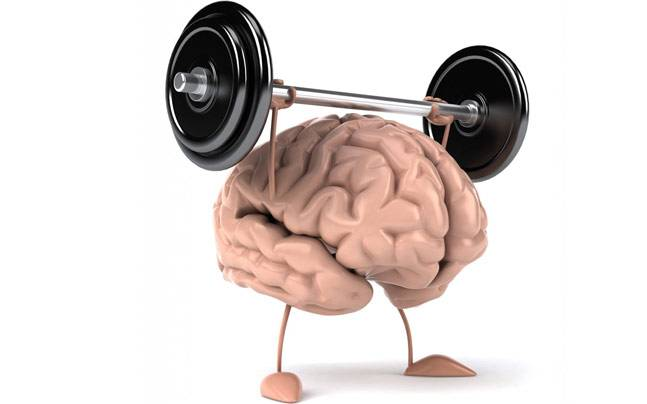

Brain growth

- Brain development in children reaches 90% in the first three years. At this time they need to focus not only on development but also on brain development.
- They are good for the brain as they are high in protein. In addition, the yolk should be given regularly. Cholesterol triglyceride, which is essential for nerve development in the yolk sac, is rich in amino acids that greatly aid in the development
of the baby's brain. Thus the child's memory is immense. Egg
- Dry nuts, seeds Children can mix dry nuts with smoothie and milk. Mix everything without the same lentils and give the mixture. These are good for the baby's brain development, the body needs healthy fats, protein, etc. to improve the baby's brain
function.:
- Seeds should also be given to children. Sunflower, pumpkin seeds should give all. It is even better to treat the baby with nut powder from the age of six months.
- A mixture of whole grains We were given whole grains as nutritious porridge and how to give it after six months with preparation methods. We make mawaki porridge by adding wheat, maize, cardamom, rye, etc., as it is difficult to feed them separately
or as they are fed. This will give the baby the full amount of energy he needs.
- Many people stop giving this porridge when they start giving solid food to the baby. But it is necessary to give the child a tumbler daily until at least 4 years old. Cereals are high in vitamin B, which is essential for the development of the
nervous system.